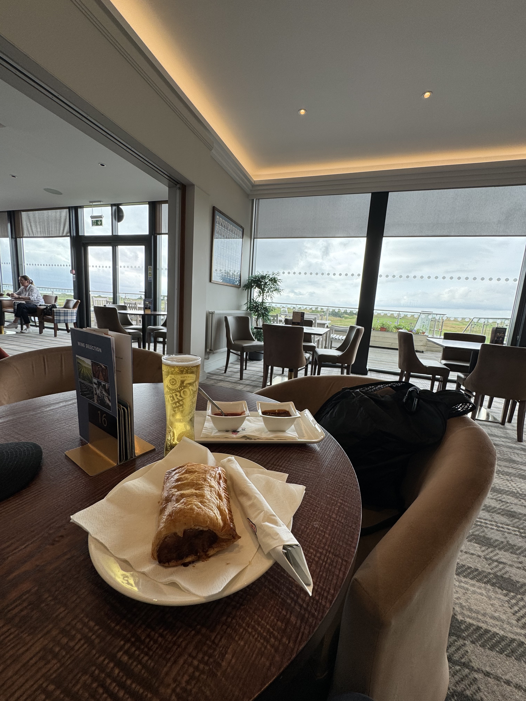
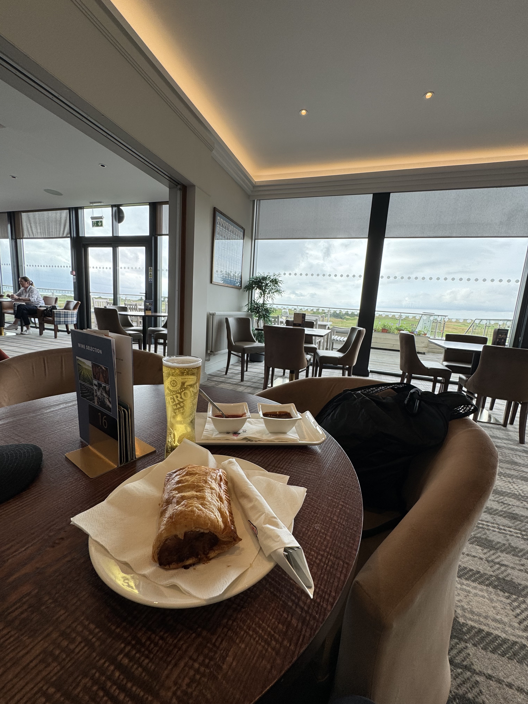

I only stayed two nights in Liverpool; however, my stay was fantastic. One thing I particularly liked was the public pianos around the town, where aspiring musicians could sit down and play. I played one in the center of a shopping center for 20 minutes. It was fun to casually play songs I knew from memory in public. I played the song Titanium by David Guetta, and some people walking by sang along as they passed.
Golf
 

Just like in Ireland, I wanted to play golf in England. I chose a challenging and prestigious links course called West Lancashire Golf Club. It was short and challenging, just like the course in Ireland. I played by myself but had a fantastic time! I hit one of the best bunker shots of my life on the 10th hole, landing it a foot away and tapping in for par. After the round, I had a drink and a traditional sausage croissant in the clubhouse and chatted with the members. It was a memorable experience, and the course manager gave me an engraved flask to take home as a souvenir. I haven’t had a chance to use it yet, but I’m dying to.
Anfield Stadium
Football (soccer) culture is enormous in England, and Liverpool has two prominent successful teams: Liverpool FC and Everton. Everton hasn’t had much success lately. However, they are building a state-of-the-art, ginormous new stadium right on the water. It looked so cool being built! I toured Anfield Stadium, home of Liverpool's team, which included lots of history and full access to the pitch and clubhouse. Over the years, Liverpool has won many Premier League and European championships, which they proudly showed off in their trophy case.
Overall
People from Liverpool are called Scousers, and they were awesome. Plus, the accent was one of a kind. Listening to the natives speak was quite fun and had me laughing all the time. I asked a local what my accent sounded like to them, and they said “somefing frum da telley”.